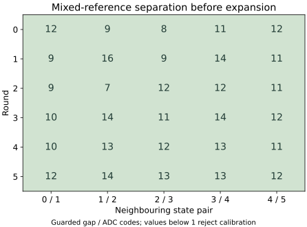
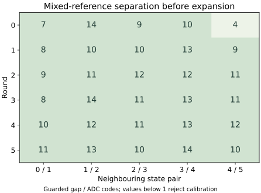

Question and rationale
The preceding return recognized all 270 triggered medians in the five rounds with accepted mixed-reference calibrations. Its first calibration failed because guarded state-4/5 intervals overlapped, leaving 54 held-out outcomes unavailable. Reference triples for those states were acquired in separate groups. The return does not identify the cause of the overlap.
This experiment tests whether insufficient separation recurs when neighbouring states are acquired close together and both request orders occur within each round. It changes the mixed-reference acquisition order while retaining the number of readings, requested offsets, guard, calibration rule and held-out sequence. Local pair separation and whole-reference calibration are assessed separately.
Acquisition sequence
One boot contains six rounds of 648 readings: 216 nominal references, 216 mixed references and 216 held-out readings per round. The nominal reference and held-out sequences remain those of the preceding experiment. There are 3888 readings in total. Quantities below use decimal notation.
- Select a pair. Acquire pairs 0/1, 1/2, 2/3, 3/4 and 4/5. Include 5/0 as an outer-state control pair, keeping equal reference counts for all states. States 5 and 0 are not neighbours.
- Interleave the endpoints. Each pair receives six repetitions of two consecutive three-reading groups. Four repetitions move the two requested states one control code inward toward each other; two use nominal requests. Reverse endpoint order with each repetition, offset by round parity. Both orders therefore occur twice under perturbation and once nominally in each pair group.
- Rotate pair position. Each pair occupies every group position once across the six rounds. Retain all rounds, including the first. Each state supplies twelve reference medians per round, with the same offset counts as before.
- Freeze and evaluate. After the mixed block, apply the unchanged gap rule to its references. Assess both frozen calibrations on the same held-out trials, including omitted-trigger controls.
For each interior state, the mixed-reference block contains four medians at each of −1, 0 and +1 relative to the nominal request. Outer states retain four nominal and eight inward medians. Requests stay within 90–105. A requested control-code increment is not an independently calibrated voltage increment.
Guard 2, zero added acquisition wait, 1000 microseconds of pre-ADC settling, operating checks, readbacks and restoration are unchanged. Zero added wait includes the existing settling and transport overhead.
Exact mixed-reference schedule
Let r = 0–5 be round, p = 0–5 group position, k = 0–5 repetition and m = 0 or 1 the three-reading group within a repetition. Pair index j = (p + r + 3) modulo 6. Endpoint e is m XOR ((k + r) modulo 2); state = (j + e) modulo 6. Nominal request is 90 + 3 × state.
For k = 2 or 5 use offset 0. Otherwise use +1 for endpoint 0 and −1 for endpoint 1. Redirect an outward outer-state offset inward; this gives state 5 offset −1 and state 0 offset +1 in the 5/0 control pair. The order is deterministic, not randomized. Reference workspace slot k + 6e places each state's twelve medians once.
Assessment fixed before acquisition
Retain the preceding integrity, trigger-provenance and recognition criteria: reconstruct the native calibrations and decisions from raw records; require all 252 unperturbed and 72 perturbed candidate medians correct, with all scheduled outcomes retained. Compare baseline and candidate on the same 324 triggered held-out medians. An unavailable calibration remains a failure for every affected outcome.
For each neighbouring reference repetition, calculate the higher-state median minus the lower-state median. Subtract 5 to obtain the count of unassigned integer codes after guard 2 on both individual medians. A positive count, at least 1, is locally separated. Require all 120 perturbed neighbouring repetitions complete and locally separated for this additional criterion. Record the 60 nominal neighbouring repetitions and 36 outer-state controls separately. Local pair separation does not replace the whole-reference minimum/maximum rule.
Report pair, request order, round, group position, requested codes, raw triple ordinals, medians, guarded gap and the counter interval between triples. Compare ascending and descending requests and early and later rounds descriptively. Preserve zero or negative gaps and incomplete pairs in their scheduled denominators. Report whole-calibration extrema and all held-out outcomes alongside these local comparisons.
Declared decision rules
- Local pairs and complete reference sets remain separated: examine held-out recognition and compare availability with the previous return. A further boot would be needed to establish recurrence.
- Local pairs separate but the full reference set overlaps: separation varies across acquisition. Examine measured extrema, request order and position before selecting a bounded adaptation experiment.
- Perturbed local pairs overlap in both orders: the tested perturbation range lacks separation under those conditions. Investigate signal variation or a different request spacing before changing recognition limits.
- Separation depends on order: investigate transition history and settling with a dedicated comparison.
One boot cannot isolate a causal effect of order from environmental changes between boots. Pair position rotates with round, and nominal references still precede mixed references. Temperature and independent analog conversion freshness are not measured by this sequence. A local reference-pair comparison is calibration evidence, not held-out recognition.
Instructions and recording
The existing SEIGRASM reference operation gains an explicit reference-order selector. The operation contains 221 literal AArch64 instruction words: 53 appended words and two changed branch words. Selector 0 retains grouped acquisition; selector 1 selects interleaved references. PC packaging places the authored instruction bytes; it does not compile a target implementation.
Configuration schema 15 identifies this schedule. The existing record layout and timing boundary remain unchanged: 64 words per reading, 76128 words in section 3, and 32525 journal sectors for a complete return. No additional SD journal space is required. Pair identity, order and raw triple ordinals are reconstructed from the fixed schedule and checked against the recorded request and state fields.
The independent assessment verifies calibrations, held-out decisions and local pair gaps. Execution checks cover every scheduled request, state counts, both endpoint orders, unique reference slots, the full acquisition sequence, deliberate wrong and rejected held-out values, altered-record detection and partial evidence recovery. Supplied device responses establish instruction and record behavior, not electrical performance.
SEIGRASM performs acquisition, calibration, recognition and recording through the existing direct-register operations. EEPROM entry and inherited hardware state remain apparatus dependencies; exclusion of other device activity is not established. This test advances electrical recognition for the Hyphos foundation; it does not yet establish Hyphos-defined Seigsit creation.
Boot 2 preparation
A second boot was added after review of boot 1, which met both declared criteria. The repeat tests whether complete calibration, held-out recognition and local pair separation recur under the same procedure. Its scope was declared before the second acquisition; the original one-boot protocol remains preserved.
Apply the original assessment separately to each boot, retaining all six rounds, including round 0. Require all six candidate calibrations accepted, all 324 triggered candidate medians correct, all 120 perturbed neighbouring pairs separated, and the unchanged integrity and trigger-control checks. A failure in either boot prevents a claim that the complete criteria recurred across both boots. Pooled counts cannot replace those per-boot outcomes.
Preparation A74E91B743BD was installed and verified by readback of the complete 64 MiB image. SHA-256: bb1e1dfe6dc28c1fd5d7168288405f6cf60e2fe8a8fa941e7573d234fc03335f. All 34 instruction regions, acquisition settings, boot configuration and journal extent match boot 1. The payload differs only in its preparation header; all 32704 journal reservations are empty and bound to the new identity.
All 107 source files still match the successful 282-check validation record, which is reused without rerunning unchanged checks. The SD contents before replacement match the preserved boot-1 return. The archive retains the image, sources, comparison, validation and installation verification. Boot 2 has returned; its observations are reported below.
Boot 1 preparation
Preparation 7F0184FF2468 was installed on the selected SD. The full 64 MiB image was verified by readback; SHA-256: 6030f4f66996a9fae84b00ee6f06676157c3e97621f3732a61fd3ce022b6d414. The originally planned single boot has returned; its results follow below.
All 282 software checks passed with no skips and unchanged sources during validation. The preparation preserves 107 source files. Comparison with the preceding image confirms 33 unchanged instruction regions and unchanged boot configuration. The reference operation, order selector, configuration schema and preparation identity change; acquisition, calibration, recognition, storage instructions and journal extent remain unchanged.
The SD contents before replacement match the preserved preceding return. The archive retains the image, sources, validation, comparison, installation readback and this protocol.
Run duration
Use one uninterrupted 26-minute powered session under the established SD procedure. Boot 1 reached final-section entry after 23 minutes 39 seconds. Boot 2 keeps the same acquisition and journal sequence; the remaining time is a completion allowance.
Results across two boots
Both boots independently met the fixed recognition, trigger-control and local-separation criteria. Each retained all six rounds, including round 0, with guard 2 and zero added wait unchanged. The second boot was declared after the first return; it tests recurrence of that result.
| Observation | Boot 1 | Boot 2 |
|---|---|---|
| Recovered readings / journal sectors | 3888 / 32525 | 3888 / 32525 |
| Accepted mixed-reference calibrations | 6/6 | 6/6 |
| Correct triggered candidate medians | 324/324 | 324/324 |
| Candidate wrong / rejected / unavailable | 0 / 0 / 0 | 0 / 0 / 0 |
| Baseline correct / rejected | 308 / 16 | 304 / 20 |
| Separated perturbed neighbouring pairs | 120/120 | 120/120 |
| Minimum local guarded gap / ADC codes | 9 | 7 |
| Minimum whole-reference guarded gap / ADC codes | 4 | 7 |
| Minimum final unassigned gap / ADC codes | 2 | 3 |
| Minimum candidate probe margin / ADC codes | 4 | 1 |
| Retained omitted-trigger triples | 108/108 | 108/108 |
| Retained triples recognized as A / rejected | 107 / 1 | 107 / 1 |
The complete criteria recurred under this procedure. Minimum held-out margin decreased despite a larger minimum whole-reference gap. Reference separation and held-out margin measure different relations and must both remain visible. Neither boot independently establishes analog conversion freshness.
Boot 2: recognition and boundaries
All 252 unperturbed and 72 perturbed candidate medians were correct. The nominal-reference baseline recognized 304/324 triggered medians: all 252 unperturbed and 52/72 perturbed. It rejected 20 and produced no wrong identities. The candidate retained all 304 baseline-correct decisions and resolved all 20 rejections.
At effective offsets −1, 0 and +1, the baseline recognized 25/36, 36/36 and 27/36 probe medians; the candidate recognized 36/36 at every offset. Baseline correct counts by round were 52, 49, 49, 52, 51 and 51 out of 54. Candidate counts were 54/54 in every round.
Candidate probe margins ranged from 1 to 27 ADC codes, with none exactly on a boundary. The narrowest margin occurred at state 0, round 2, request 91: readings 1785–1787 were 2820, 2820 and 2814. Their median, 2820, was one code below the candidate upper limit of 2821. Complete recognition therefore coexists with a narrow observed acceptance margin.
Boot 2: reference separation
All 120 perturbed neighbouring pairs separated: 60 ascending and 60 descending. Minimum local guarded gaps were 8 and 7 codes respectively. All 60 nominal neighbouring repetitions and 36 outer-state controls also remained separated.

Whole-reference guarded gaps ranged from 7 to 16 codes; final unassigned gaps ranged from 3 to 6. The smallest whole-reference gap occurred at state 1/2 in round 2. State 2's minimum median was 2885 from request 95, readings 1590–1592: 2885, 2889, 2883. State 1's maximum median was 2873 from request 94, readings 1593–1595: 2873, 2880, 2867. Those consecutive descending triples also supplied the minimum local gap: 2885 − 2873 − 5 = 7.
The final facing acceptance limits were 2877 and 2881, leaving three unassigned codes. State 4/5's first-round guarded gap was 12, compared with 4 in boot 1. The first round was retained and passed; it was not the narrowest round in this repeat.
Boot 2: controls and timing
All 108 omitted-trigger triples retained the last raw A value; all 90 changed-state trials changed numerically at the first triggered B reading. The 18 self-transitions remain separate. Recorded status signatures, agreeing result pairs, request readbacks and ordering checks passed.
One retained triple was rejected by the candidate. State-0 prime readings 468–470 were 2792, 2795 and 2783; their median, 2792, was correctly recognized. Following a request for state 4 without a trigger, readings 471–473 retained 2783, below the candidate lower limit of 2787. Triggered state-4 readings then returned 3022, 3022 and 3020. Both boots therefore retain a rejected single-reading outlier despite successful median recognition.
All 3888 whole-call intervals and 27216 internal ADC counter observations passed ordering checks. All 7776 endpoint frequency readings reported 54000000 Hz. Whole-call duration had a median of 34.924000 ms and a range of 33.106741–39.047000 ms. Acquisition lasted 138.038363 nominal seconds; the ordered first-start to last-end span was 138.029870 seconds.
Decision ages ranged from 7.898872 to 15.429962 seconds for nominal references and 0.104866 to 7.635897 seconds for mixed references. Final-section entry occurred 1418.920370 nominal seconds after trial entry, about 23 minutes 39 seconds. The complete journal was recovered; this does not establish the target's final readback or the externally powered duration.
Boot 1 results
All 3888 readings and 32525 journal records were recovered. Both the complete-recognition criterion and the local perturbed-pair separation criterion were met. All six mixed-reference calibrations were accepted, including round 0.
| Outcome | Nominal references | Interleaved mixed references |
|---|---|---|
| Correct | 308 | 324 |
| Wrong identity | 0 | 0 |
| Rejected value | 16 | 0 |
| Unavailable | 0 | 0 |
Both procedures recognized all 252 unperturbed medians. Of 72 perturbed medians, the baseline recognized 56 and rejected 16; the candidate recognized all 72. The candidate retained all 308 baseline-correct decisions and resolved the 16 rejections, meeting the declared descriptive-improvement criterion.
These recognition counts concern triggered three-reading medians. Raw-reading and omitted-trigger identity scores do not supply this criterion.
Correct triggered medians by round
| Round | Nominal references | Interleaved references |
|---|---|---|
| 0 | 53/54 | 54/54 |
| 1 | 50/54 | 54/54 |
| 2 | 49/54 | 54/54 |
| 3 | 50/54 | 54/54 |
| 4 | 53/54 | 54/54 |
| 5 | 53/54 | 54/54 |
Boot 1: neighbouring reference pairs
All 120 perturbed neighbouring repetitions were complete and separated after guard 2: 60 in ascending order and 60 in descending order. The minimum local guarded gap was 9 ADC codes in each order. All 60 nominal neighbouring repetitions and all 36 outer-state control repetitions were also separated; outer controls remain a distinct comparison.
| Pair | Ascending | Descending |
|---|---|---|
| 0/1 | 10–14 | 9–14 |
| 1/2 | 10–17 | 11–18 |
| 2/3 | 9–14 | 11–16 |
| 3/4 | 13–15 | 10–16 |
| 4/5 | 9–14 | 10–18 |
No request order produced a local separation failure in this boot. These ranges do not establish that order has no effect: repetition, round and transition history remain observable factors in the preserved records.
For example, the first perturbed 4/5 repetition in round 0, readings 252–257, had medians 3044 and 3058. Their difference was 14; subtracting the two guards and the intervening endpoint code gives a local gap of 9. The limiting full-reference pair uses extrema from different repetitions, as shown next.
Boot 1: whole-reference separation
All thirty neighbouring gaps across the six complete reference sets remained positive: 4–14 unassigned ADC codes after guard 2 and before expansion. The unchanged one-third-gap rule left 2–6 unassigned codes between the final acceptance intervals.

The smallest gap remained at state 4/5 in round 0. State 4's maximum reference median was 3044, from request 103 and readings 252–254: 3072, 3035, 3044. State 5's minimum median was 3053, from request 104 and readings 258–260: 3053, 3058, 3051. Guarded extrema were therefore 3046 and 3051, leaving four unassigned codes, 3047–3050. After expansion, the final facing limits were 3047 and 3050, leaving codes 3048 and 3049 unassigned.
The preceding grouped-reference boot had a guarded gap of −2 at that pair and round; this boot had +4. The recurrence of the narrowest whole-reference gap early in acquisition warrants retaining the first round in subsequent assessment. This cross-boot difference does not isolate order as its cause.
Boot 1: held-out boundaries
At effective offsets −1, 0 and +1, the baseline recognized 27/36, 36/36 and 29/36 probe medians. The candidate recognized 36/36 at every offset. Its probe margins ranged from 4 to 26 ADC codes; none was exactly on a boundary.
All six states retained correct nominal and inward or neighbouring perturbation recognition under this schedule. Outward probes at the two outer states were not tested. The result establishes the observed coverage for this boot and these requests, rather than a general error rate or unrestricted voltage range.
Boot 1: retention and trigger controls
All 108 omitted-trigger triples retained the immediately preceding last raw A value. All 90 changed-state trials changed numerically at the first triggered B reading; the 18 self-transitions remain separate. Declared status signatures, agreeing result pairs, request readbacks and ordered observations passed.
The candidate recognized 107 omitted triples as A and rejected one. For the exception, prime-A readings 504–506 were 2794, 2795 and 2783 at state 0. Their median, 2794, was correctly recognized. After requesting state 5 without a trigger, readings 507–509 all retained 2783, below the candidate state-0 lower limit of 2789. Triggered state-5 readings then returned 3080, 3079 and 3077.
This exception is retained as a control observation. It shows why successful three-reading median recognition does not qualify every individual raw reading. Trigger dependence and retained-result recognition still do not independently establish the timing or provenance of each analog conversion.
Boot 1: timing and completion
All 3888 ordered whole-call intervals and 27216 internal ADC counter observations passed their ordering checks. All 7776 endpoint frequency observations report 54000000 Hz. Whole-call duration had a median of 34.923657 ms and a range of 33.098278–39.045426 ms.
Acquisition lasted 138.038168 nominal seconds; the ordered first-start to last-end span was 138.029675 seconds. Recorded decision ages ranged from 7.898954 to 15.430720 seconds for nominal references and from 0.104809 to 7.636441 seconds for mixed references. The candidate references remain later and younger.
The saved inter-triple interval is the gap between the ordered end of the first triple's third read and the ordered start of the next triple's first read. It excludes the duration of those reads and does not measure the interval between physical conversions.
Final-section entry occurred 1418.790884 nominal seconds after trial entry, about 23 minutes 39 seconds. The complete journal was recovered; the final target-side readback is not established by that recovery. These counters do not measure the external powered duration.
Interpretation and next investigation
Complete recognition and separation recurred in two boots with unchanged instructions, guard and requests. Each boot accepted all six calibrations, recognized all 324 triggered candidate medians and separated all 120 perturbed neighbouring pairs. This supports the tested three-reading median procedure under the recorded apparatus conditions.
The limiting gap moved between state pairs and rounds, and the narrowest candidate probe margin fell from four codes to one. Each boot retained one rejected omitted-trigger value from a raw state-0 outlier. The observed success does not establish a general error rate, durable margins under untested conditions or single-reading reliability.
The next reference-order comparison acquires grouped and interleaved mixed references within the same boot, with their order reversed across rounds and the same held-out requests. Its purpose is to distinguish an acquisition-order effect from variation between boots, while retaining both calibration timestamps and the original guard. Report per-round availability, state-0 boundary margins and all failures; whichever reference set is acquired later remains younger, so order balancing and measured age are necessary parts of that design.
Independent analog freshness, absolute voltage and counter accuracy, and exclusion of other device activity remain open. The results strengthen the electrical recognition foundation for Hyphos; Hyphos-defined Seigsit creation remains to be demonstrated.
The subsequent within-boot reference-order comparison recovered all readings but rejected calibrations under both schedules, including two locally overlapping state-3/4 pairs. It did not establish an interleaved advantage. Those observations limit extrapolation from the two complete boots recorded here.
Acquisition integrity
Each return was captured twice with matching hashes and its own preparation identity. The two archived pre-acquisition protocols preserve the original one-boot plan and the subsequent repeat decision.
Boot 1
Two read-only captures agree by SHA-256: 32b0aecae46d9f490c4553f47f6cce911419907852d17bb433478ec060caeeeb. Preparation identity matches, both boot files are unchanged, and all 32525 journal records are valid and consecutive. The 179 unused reservations remain unchanged. All six block restorations completed; final restoration and pin release report success.
Seven sectors outside the journal differ from preparation; their writer and timing remain unidentified. No deviations were reported, and external durations were not separately measured. The preserved preparation retains the pre-acquisition protocol; the return retains the capture, fixed assessment, descriptive observations and analysis sources.
Boot 2 evidence
The two read-only captures agree by SHA-256: bf55aaf7f475d4b33b1056e4d64cf69139781998cf4ee7088978b0930a65c840. Identity matches preparation A74E91B743BD. Both boot files are unchanged, all 32525 journal records are valid and consecutive, and 179 reservations remain unused. All six block restorations completed; final restoration and pin release report success.
Seven sectors outside the journal differ from preparation; their writer and timing remain unidentified. No deviations were reported; external durations were not separately measured. The archive preserves the raw capture, acquisition metadata, assessment, descriptive observations and exact analysis sources.